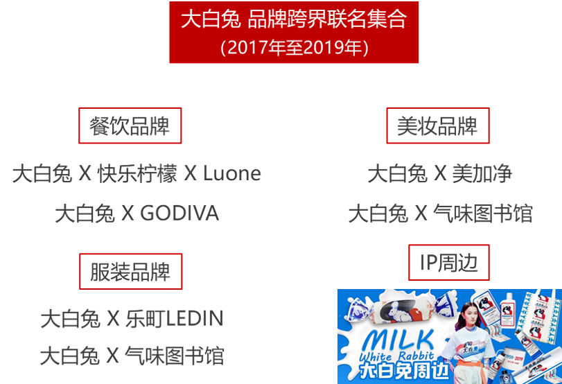

民国时期：振兴实业与国货运动
十九世纪末二十世纪初，随着中国资本主义生产的发展以及西方经济思想的传入，人们逐渐认识到发展工业、兴办实业对于国民经济的重要意义，于是提出“以工立国”、“振兴实业”的思想。同时，为抵制外货倾销，挽回利权，早期民族资产阶级代表人物提倡国货的消费与生产，呼吁政府改革税制，保护和发展近代工商业，为国货工业的发展提供必要的外部环境，“国货”思潮初步形成。
图《申报》定期刊登的国货运动宣传广告（1930年代初）
新中国伊始至改革开放时期：国货风靡
1949年新中国成立后，中央制定了一系列经济恢复政策，建立了集中统一的管理体制，对不同经济成分进行了社会主义改造，同时开始向工业化迈进。在这样的大背景下，资本主义工商业和个体经济重获新生，一些人们耳熟能详的国货品牌开始崭露头角。时间来到七八十年代，改革开放的春风让中国的轻工业有了跨越式的发展，做工精湛的国货们也得以走入寻常百姓的家庭。
1979年10月14日《解放日报》的报道中，有这样一组数字：
作为物质贫乏时代里的时髦品，“老国货”们制作精良，具有别样的民族特色，是特定社会背景下，劳动人民智慧和创造力的产物。大白兔奶糖、凤凰自行车、回力球鞋……无不承载着人们清晰而深刻的国民记忆。
1959年，大白兔奶糖成为建国十周年的献礼产品，至此它奠定了“国民奶糖”的地位。半个世纪后，大白兔奶糖于2005年成为大陆与台湾 50 年后首次直航的纪念糖果、2010年上海世博会的指定糖果，甚至在东南等地也颇受欢迎。大白兔巅峰时期，年销售高达146亿，远销50多个国家和地区，广受世界各地消费者青睐。
在那个“满大街都是蓝蚂蚁”的时代，中国老百姓穿的胶鞋不仅牌子不多，而且款式单一，绝大多数中国人穿的都是“解放鞋”。时髦的“回力”鞋在这之中显得“鹤立鸡群”。1956年，回力鞋厂为国家男子篮球队研发的“565”高帮篮球鞋，惊艳一时，售价9元多，相当于当时普通工人半个多月的工资。
上世纪七八十年代，自行车和缝纫机、手表一起，成了年轻人结婚必备的三大件。一辆自行车代表着一种“奢侈”的代步方式，它的地位不亚于如今的奔驰宝马。
在中国人的传统观念里，“凤凰”是吉祥和高贵的象征，因此，凤凰牌自行车也成了姑娘出嫁时一份很有面子的嫁妆。彼时，到上海采购凤凰自行车蔚然成风：由于整体经济环境复苏，加上人人都有大干快上的积极心态，象征着精致、耐用、价格又比较实惠的“上海制造”自行车队伍越来越大。
小小的大白兔奶糖承担过一项特殊的外事任务。1972年1月，尼克松总统访华前夕，美国派出黑格准将带领的先遣队前往中国，为中美建交做准备。一次偶然，招待人员发现美方一行人对大白兔奶糖的偏爱，于是中方决定将其作为外交礼物。时任中国外交部翻译章含之回忆道，当时国内并无足够的现成糖果，毛主席指示下达之际已是半夜。上海接到通知后连夜召集糖厂工人，终于在第二天正午之前赶制出500余斤糖果，送给了当时访华的美国客人。
1984年，中国女排就是穿着回力篮球鞋在洛杉矶奥运会上战胜了强队美国队，实现了历史上著名的三连冠，回力名声大噪，顿时成为了国民心目中的时尚潮牌。
1980年9月14日，在开展全国第三次“质量月”活动中，凤凰牌28吋PA18型自行车获市级优质产品证书和奖励，并同26吋轻便车一起首次进入欧洲市场，成为我国首个进入欧美市场的自行车品牌。
市场化新时期：沉寂过后的重生
20世纪90年代，随着改革开放的深入，大量国外品牌、企业和产品的流入及新技术产品的开发，不断挑动消费者的视觉神经和购买欲，加上国有企业在生产技术、管理和产品营销等方面的落伍，导致在商品经济的大浪淘沙中，诸多老品牌面临生存困境，开始衰落和逐步淡出大众视野。
但沉寂不意味着消亡。
时间来到21世纪。在互联网高速运转、消费升级、营销模式花样百出的今天，人们欣喜地发现，那些承载着时代国民记忆的“旧国货”们，正在以一种“潮酷”的方式复兴和回归。
回力：进驻电商，融合大数据革新设计
- 2000年5月
- 2008年8月
- 2009年12月
- 2015年5月
- 2016年7月
- 2017年2月
- 2018年3月
- 2019年8月


上海回力鞋业有限公司成立
北京奥运会期间与凤凰卫视合作，开展全国十大网站联播回力宣传活动
获得中国2010年上海世博会特许零售商资格
首次在国外召开品牌订货会
推出三大系列新品，启动电商平台新模式，全力打造全新国货品牌。
名列阿里研究院“2016年度中华老字号电商百强排行榜”前三甲。
发行“回力之天”帆布鞋，成为史上热销款
入驻社交电商平台“秀购”
回力在近几年发展中并没有如其他国产品牌一样墨守成规，局限于线下布局，而是积极地融入到电商和大数据的潮流中。进驻电商扁平化销售渠道，利用大数据调研年轻人喜爱的款式颜色，革新设计成为了回力发展的新法宝。
上海回力鞋业有限公司总经理杨卫东告诉记者：“回力的体量和精力都有限，所以一改以往的单一大批发模式，选择走全外包轻资产路线，只把管理抓在手上。”2014年开始，消费者的购买习惯逐渐转到电商上，“回力”瞄准时机进军电商业务，建立“终端直供平台+电商平台”新的营销模式，助力回力鞋业新的发展。2016年，天猫平台7家回力VIP经销商销售就增长1000%，达1.1亿元。2018年，回力天猫旗舰店销售额超过2亿元，其中帆布鞋销量增长500%。回力官方旗舰店在天猫的销售额从2014年到2018年这4年间增长超过65倍。
取得这样的成绩，主要靠管控。“海魂衫、红白鞋是一个年代的符号，这是回力鞋自带的推广基因，而且在市场上一直处于供小于求的状态，因此市场推广也要有的放矢。”进入上海回力鞋业有限公司的常务副总经理张恩祈说。（来源：2017年5月20日，《解放日报》头版“砥砺奋进的五年”栏目刊登报道《没有一家工厂，销售却连年增长 九十岁回力鞋这几年为何能轻松快跑》）
大白兔奶糖：IP联名，复古×潮酷新思路
- 2015年9月
- 2016年10月
- 2017年2月
- 2018年5月
- 2018年9月
- 2019年2月
- 2019年5月
- 2019年9月
出海初尝试，与法国agnes.b跨界打造糖果礼盒
饮食跨界，与太平洋咖啡联合推出牛奶味拿铁
初步造势IP形象，与《球球大作战》推出大白兔皮肤；
制定品牌跨界合作战略主张
老字号合作，与美加净跨界推出大白兔润唇膏；
为六十周年庆贺，成功举办品牌快闪展
与气味图书馆推出大白兔味香氛，全网脱销
加入百度国潮季，推出联名款智能音箱
拥有几十年历史的国产老字号品牌，大白兔始终走在流行时尚的前沿。农副产品的糖果野心远远不能满足品牌需要。
2018年，大白兔和美加净一起推出润唇膏，2019年联手气味图书馆打造“快乐童年”香氛套装，和 LEDIN 乐町发布了大白兔联名服饰系列……大白兔的每个新动作都能掀起一阵热潮。积极拓宽跨界维度，在茶饮、个护、美妆、服饰等不同领域都做了创新尝试的大白兔越来越多元立体、鲜活有趣，无疑比其他一本正经的传统品牌更受这届年轻人喜爱，甚至有成为“童年回忆第一IP ”之势。

大白兔跨界的高明之处在于，它让经典 IP 和品牌印记成为穿越时代的通感符号，使得今天的消费者愿意为这种情怀买单。同时，混搭、联名碰撞出的潮酷元素也令年轻人们心驰神往。
上海冠生园公司的销售经理沈勤丰认为，国内消费者——尤其是年轻消费者——对本土品牌的兴趣增加在任何国家的发展史上都是一个自然的过程。他说：“今天的年轻消费者有比较强的民族自豪感，同时也更愿意接触新事物和新思想……因此对本土品牌创新的接受是必然的。”
国货热的现状
思懿是中山大学的一名大学生。
最近她发现，身边同学都在讨论一个词“国潮”。
从她室友的大白兔味的香水，到手里的华为手机。
国货正在逐渐占领年轻大学生的日常生活，成为他们彰显时尚的潮流符号。
“国潮”是目前最流行的潮流动向。所谓“国潮”，是最近“国货”加“潮流”的合成衍生热词。现在的国货现在有多火？610元的大白兔联名帆布包瞬间售罄，故宫彩妆在网上好评如潮……大家越来越崇尚买国货、用国货、在网上晒国货。
据百度和人民网联名发布的《百度国潮骄傲大数据》显示，相较2009年，2019年中国品牌关注度从38%跃升至70%，实现了对境外品牌的反超。国货正在以蓬勃之势迅速占领市场。
人们不仅仅关注国货，更从行动中体现出对国货的支持。据阿里研究院《2019中国消费品牌发展报告·新国货 大未来》的数据显示，2018年阿里巴巴零售平台中国消费品牌市场占有率71%。线上高端市场中国消费品牌市场占有率同比2018年提升2.2个百分点。同时在阿里巴巴平台上，2018年与中国元素相关的关键字累计搜索量超过126亿次。2018年淘宝消费者人均购买非遗、老字号商品超过2件，其中80、90后消费者占比超过7成。
为何国货能在年轻人中掀起热潮？
国货热的兴起，首先离不开的是国家硬实力的增长。制造业的稳步增长，技术实力的迅速上升，创新投入的巨大投入，都是国货发展的巨大动力。相较美国等国家相比，中国制造业近些年的迅速增长便是国货崛起最大的保证。
统计数据显示，2004年中国制造业增加值为6252.23亿美元，相当于美国制造业增加值的38.9%，相当于日本制造业增加值的60.9%。2018年，中国制造业增加值已跃升至40018.65亿美元，占世界制造业增加值总额的27.04%，比美国制造业增加值高出71.4%，是德法英意欧洲四大国制造业增加值总和的2.44倍。我国的企业研发投入占全社会研发投入比重超过70%，规模以上工业企业中，超过四成开展创新活动。
打铁还需自身硬。硬国货热的兴起，还需要国货自身的锐意进取。近年来，国货不断调整自身发展战略，积极把握时代机遇，充分利用传统文化志愿，提升产品品质与设计格调，终于用行动成功撕下了“老土”“劣质”的标签。
国货热的兴起，同样需要国人消费能力的提升。改革开放以来，我国居民收入不断上升，生活水平和消费能力已经有了翻天覆地的进步。消费人群的构成结构也在悄然发生变化，20-29岁的90后成为国货最为忠实的粉丝。更年轻的消费群体，意味着他们更乐意去接受新兴事物，更加不容易受过去国产品牌“低廉”、“劣质”的刻板印象的影响。我国居民不仅有意愿，而且更有能力去支持国产的潮牌。
国货热背后的文化自信和潮流新动向
国货老品牌正在被越来越多的年轻人所接受和认同。一方面，国货老品牌因为＂老＂而不同于现代社会的＂新＂，相对于 “新”“老”反而是更为独特的、有个性的。在产品高度同质化，崇尚快消品的现代社会，大量雷同的所谓快消品导致了受众审美疲劳。年轻一代消费者将个性的、另类的东西作为时尚潮流，国货潮的出现真好迎合了年轻一代消费者的心理。
另一方面，国货热还是传统文化元素的再创新和文化自信的必然结果。新国货创新性的利用传统的文化元素，结合时下流行的表现形式，将怀旧与创新结合。这种主打情怀的营销方式很好的激发了年轻人之中特殊的怀旧情怀。老国货作为蕴含一个时代文化内涵的民族传统文化的载体，虽然部分被时代所淘汰，但依旧是国人民族认同，文化认同的重要形式。国货老品牌通过网络营销和全新形式的出现，很好营造了受众感知民族文化和民族精神的氛围，进一步唤醒了年轻人新中国隐含的民族文化认同感，自然倍受青年们欢迎。
最后，不可否认的是，新一代国货相较之前外国产品拥有更为出色的性能和质量表现，让更多年轻消费者以更低廉的价格享受到更优质的产品。由此更加激发了消费者的民族自豪感和民族认同，进一步促进了国货热的出现。
国货热之后，我们应该怎么继续走？
国货在当今已经取得的巨大成就，不应该成为我们骄傲自满的资本。冷静反思，国货应该如何进一步取得更大的成绩？2019年，《政府工作报告》明确提出，我国要强化质量基础支撑，推动标准与国际先进水平对接，提升产品和服务品质，让更多国内外用户选择中国制造、中国服务。个人标签为“国货爱好者”的大四学生张雅（化名）表示，继续创新、提升质量是国货持久发展的取胜之道。真正的新国货，不仅要做到文化自信，更加要做到提质提价的同时进行。
中国青年报社社会调查中心联合问卷网的调查中，59.1%的受访者建议老字号跨界发展时多注重产品质量，不盲目追求一时热度，56.8%的受访者建议老字号多做产品创新，推出新的产品，55.6%的受访者建议老字号改进经营管理方式，改变僵化的模式。
振兴国货，国家也在行动。中国品牌日，老字号发展计划等一系列行动的开展，彰显了国家进一步发展的决心。
-
2006年
商务部发布《关于保护和促进老字号发展的若干意见》，我国鼓励老字号企业开展资本运作，支持符合条件的企业上市。
-
-
-
2019年
商务部、国家邮政局、中国消费者协会组织指导“双品网购节”系列活动，全面促进品牌消费与品质消费。
振兴国货，还需要网购平台和国货品牌多方合作。近年来，天猫、京东都先后和国货品牌开展多方面合作，如通过天猫“国潮来了”主题销售活动、京东国货海外全球售平台等。产品发力，平台联动，强强联手，推动国货不仅火爆国内，更畅销海外。
早在2017年，天猫便针对中国品牌的营销升级推出了“国品计划”，并在2019年将新国货计划作为今年战略布局中重要的增长领域。
根据《2019中国品牌出海50强》的数据显示，中国出海品牌今年的品牌力整体增长迅猛。继2018年度增长 5% 之后，本年度品牌力增长高达15%。中国品牌的发展不仅需要打动国内消费者，更需要积极走出去，打动国外消费者。在国家一带一路战略的背景下，努力让中国品牌走出去，让世界爱上中国智造是重要策略。
回溯过去，民族品牌的辉煌与暗淡背后，是时代的风云变幻。
展望未来，老字号们用开拓创新的思路，走出一条不同常往的复兴之路。
百年前的国货振兴运动里，进步青年人用朴素的民族情怀与赤诚的爱国之心推动着“中国制造”的萌芽与发展；现如今，新潮又复古的Z世代年轻人眼中，国货依旧是闪闪发光的民族符号。相较于过去，“新青年”们对国货的推崇不仅仅着眼于其工具性价值；他们对“国潮”的偏爱，蕴含着对复兴传统的追求，也透露出日益增强的文化自信力。
青年与当代中国的主流价值，正通过“新国货”建立一种奇妙的联结。这种联结从过去走到现在，又将前往另一个生机焕发的将来。
❤ 策划&制作：胡麟薇、黄盈佳、廖朗星
❤ 文本&数据：黄盈佳、廖朗星
❤ 前端&设计：胡麟薇
❤ 参考资料：中国青年报社社会调查中心，周丽娜. 基于受众视角的国货老品牌回归现象探究[D].湖南师范大学,2015.
❤ 数据来源：世界银行官网、国家统计局、工业及信息化部官网、《百度国潮骄傲大数据》、
《2019中国消费品牌发展报告·新国货 大未来》、品牌官方信息
❤ 图片来源：品牌官方报道、新闻报刊、网络收集